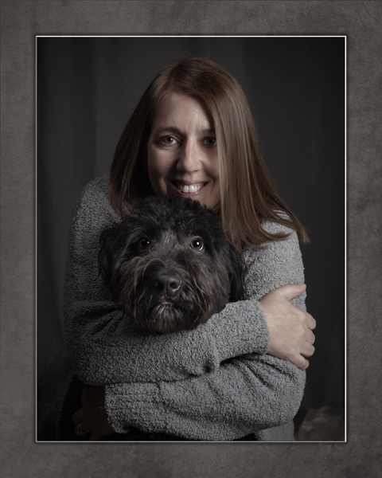
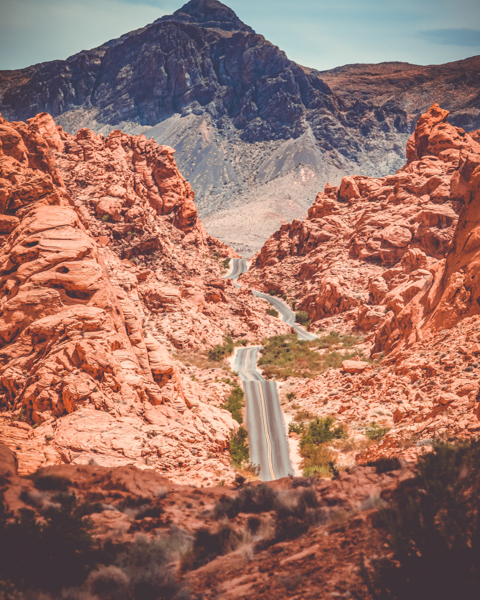
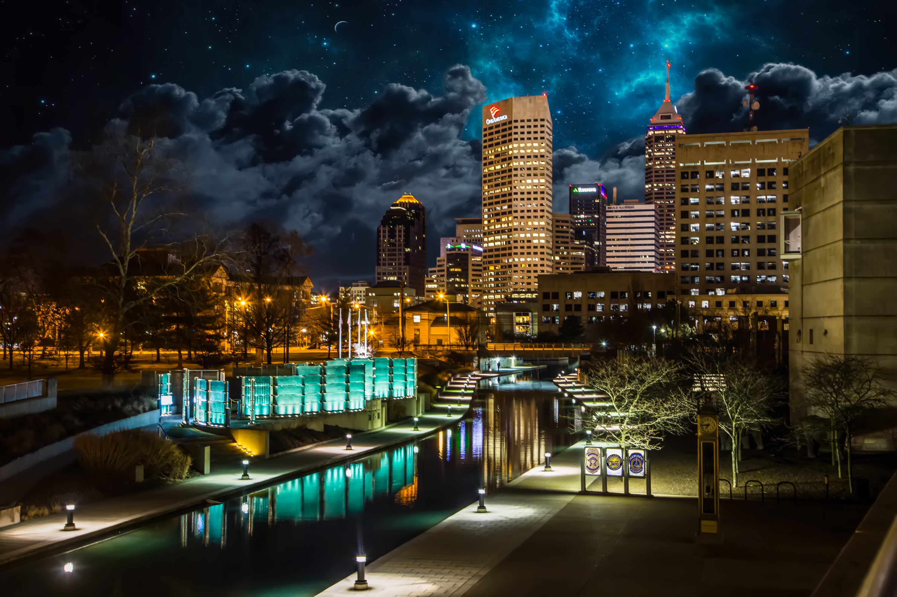
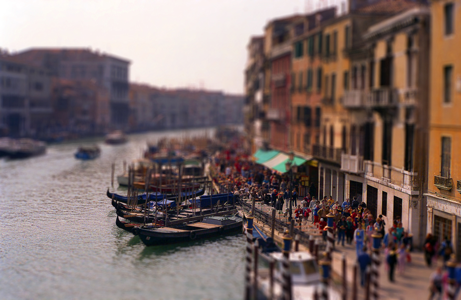

Valley of Fire, NV


Grand Canal, Venice, Italy (1984)

Hello, and thank you for visiting my portfolio site!
My name is Tom, and I am a creative adventurer!
I lived half of my life until my early twenties outside of the United States where I developed a love for art at a very young age. In Japan I learned the subtle art of watercolor painting and minimalistic charcoal sketches.
Later I spent seven years in Europe where I learned to appreciate creative portraiture through oil painting and photography. Today, I express my artistic side through photography and enjoy traveling, capturing beautiful imagery, and creating artwork with my images.
The progression of art from my early sketches and paintings, led to film photography, then on to digital photography and illustrations. Now, I am on a new path to express my creativity through the development of creative digital content for those looking for a way to creatively present themselves to the digital
I now live in Fishers with my wife and two dogs, and am nearing the end of a 23 year career as a Police Officer. My current duties involve supervising our Department's Body Worn Camera Unit. Additionally, I own a photography business, specializing in Wedding and Portrait Photography.
As a photographer I have learned to use many Adobe products, and am an advanced user of Adobe Photoshop, Lightroom, and Apple Final Cut Pro, which I use to create content for websites.
I am currently enrolled in ElevenFifty Academy's Web Developer course where I have learned HTML, CSS, JavaScript, and Bootstrap. At the completion of this course I will make use of my creative experience and coding skills to build websites and digital content that will help your organization stand out from the boring templates used by so many websites.
I have included some of my work and photos of me that help to highlight my past, and show some of my passion for photography.
If you would like to learn more about my photography, please click the button below!